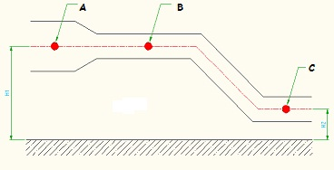
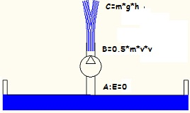

<!DOCTYPE HTML PUBLIC "-//W3C//DTD HTML 4.01 Transitional//EN">
<html>

<!-- Mirrored from recursostic.educacion.es/secundaria/edad/4esotecnologia/quincena9/4q9_contenidos_1d.htm by HTTrack Website Copier/3.x [XR&CO'2014], Sat, 11 Sep 2021 13:47:27 GMT -->
<head>
<title>Neum&aacute;tica e Hidr&aacute;ulica</title>
<meta content="text/html; charset=utf-8" http-equiv="Content-Type">
<script language="JavaScript" type="text/JavaScript">
<!--

function MM_reloadPage(init) { //reloads the window if Nav4 resized
if (init==true) with (navigator) {if ((appName=="Netscape")&&(parseInt(appVersion)==4)) {
document.MM_pgW=innerWidth; document.MM_pgH=innerHeight; onresize=MM_reloadPage; }}
else if (innerWidth!=document.MM_pgW || innerHeight!=document.MM_pgH) location.reload();
}
MM_reloadPage(true);
function MM_preloadImages() { //v3.0
var d=document; if(d.images){ if(!d.MM_p) d.MM_p=new Array();
var i,j=d.MM_p.length,a=MM_preloadImages.arguments; for(i=0; i<a.length; i++)
if (a[i].indexOf("#")!=0){ d.MM_p[j]=new Image; d.MM_p[j++].src=a[i];}}
}
function MM_findObj(n, d) { //v4.01
var p,i,x; if(!d) d=document; if((p=n.indexOf("?"))>0&&parent.frames.length) {
d=parent.frames[n.substring(p+1)].document; n=n.substring(0,p);}
if(!(x=d[n])&&d.all) x=d.all[n]; for (i=0;!x&&i<d.forms.length;i++) x=d.forms[i][n];
for(i=0;!x&&d.layers&&i<d.layers.length;i++) x=MM_findObj(n,d.layers[i].document);
if(!x && d.getElementById) x=d.getElementById(n); return x;
}
function MM_nbGroup(event, grpName) { //v6.0
var i,img,nbArr,args=MM_nbGroup.arguments;
if (event == "init" && args.length > 2) {
if ((img = MM_findObj(args[2])) != null && !img.MM_init) {
img.MM_init = true; img.MM_up = args[3]; img.MM_dn = img.src;
if ((nbArr = document[grpName]) == null) nbArr = document[grpName] = new Array();
nbArr[nbArr.length] = img;
for (i=4; i < args.length-1; i+=2) if ((img = MM_findObj(args[i])) != null) {
if (!img.MM_up) img.MM_up = img.src;
img.src = img.MM_dn = args[i+1];
nbArr[nbArr.length] = img;
} }
} else if (event == "over") {
document.MM_nbOver = nbArr = new Array();
for (i=1; i < args.length-1; i+=3) if ((img = MM_findObj(args[i])) != null) {
if (!img.MM_up) img.MM_up = img.src;
img.src = (img.MM_dn && args[i+2]) ? args[i+2] : ((args[i+1])? args[i+1] : img.MM_up);
nbArr[nbArr.length] = img;
}
} else if (event == "out" ) {
for (i=0; i < document.MM_nbOver.length; i++) {
img = document.MM_nbOver[i]; img.src = (img.MM_dn) ? img.MM_dn : img.MM_up; }
} else if (event == "down") {
nbArr = document[grpName];
if (nbArr)
for (i=0; i < nbArr.length; i++) { img=nbArr[i]; img.src = img.MM_up; img.MM_dn = 0; }
document[grpName] = nbArr = new Array();
for (i=2; i < args.length-1; i+=2) if ((img = MM_findObj(args[i])) != null) {
if (!img.MM_up) img.MM_up = img.src;
img.src = img.MM_dn = (args[i+1])? args[i+1] : img.MM_up;
nbArr[nbArr.length] = img;
} }
}
function MM_swapImgRestore() { //v3.0
var i,x,a=document.MM_sr; for(i=0;a&&i<a.length&&(x=a[i])&&x.oSrc;i++) x.src=x.oSrc;
}
function MM_swapImage() { //v3.0
var i,j=0,x,a=MM_swapImage.arguments; document.MM_sr=new Array; for(i=0;i<(a.length-2);i+=3)
if ((x=MM_findObj(a[i]))!=null){document.MM_sr[j++]=x; if(!x.oSrc) x.oSrc=x.src; x.src=a[i+2];}
}
//-->
</script>
<script type="text/javascript" src="../embeddedcontent.js" defer="defer"></script>
<style type="text/css">
<!--
table tr td table tr td p font strong em {
	color: #004000;
}
#Layer1 table tr td table tr td ol li font u {
	color: #800080;
}
#Layer1 table tr td table tr td p font {
	font-family: Arial, Helvetica, sans-serif;
}
#Layer1 table tr td table tr td font {
	font-family: Arial, Helvetica, sans-serif;
}
-->
  </style>
<link href="../paracidead1.css" rel="stylesheet" type="text/css"></head>

<!-- Mirrored from recursostic.educacion.es/secundaria/edad/4esotecnologia/quincena9/4q9_contenidos_1d.htm by HTTrack Website Copier/3.x [XR&CO'2014], Sat, 11 Sep 2021 13:47:27 GMT -->
</html>
&aacute;
<html>
<head>
</head>


<body onLoad="MM_preloadImages('../imagen/paraantes3.png','../imagen/paraconte.png','../imagen/atrasb.png','../imagen/paraantes2.png','../imagen/paracont2.png','../imagen/adelanteb.png','../imagen/atrasb.png','../imagen/paraantes3.png','../imagen/paraconte.png','../imagen/paraejer3.png','../imagen/paraejer2.png','../imagen/paraeval3.png','../imagen/paraeval2.png','../imagen/paratut3.png','../imagen/paratut2.png','../imagen/paramas3.png','../imagen/paramas2.png','../imagen/paracont3.png','../imagen/paralapiz2.png')" bgcolor="#f1f1f1">
<div id="Layer1" style="position: absolute; left: 0px; top: 0px; width: 800px; height: 528px; z-index: 1;">
  <table align="center" border="0" cellpadding="0" cellspacing="0">
    <tr>
      <td><a href="4quincena9_presenta_1a.html" target="_parent" onClick="MM_nbGroup('down','group1','antes','../imagen/paraantes3.png',1)" onMouseOver="MM_nbGroup('over','antes','../imagen/paraantes2.png','',1)" onMouseOut="MM_nbGroup('out')"></a></td>
      <td><a href="javascript:;" target="_parent" onClick="MM_nbGroup('down','group1','contenidos','../imagen/paracont3.png',1)" onMouseOver="MM_nbGroup('over','contenidos','../imagen/paracont2.png','../imagen/paracont3.png',1)" onMouseOut="MM_nbGroup('out')"></a></td>
      <td><a href="4quincena9_ejercicios_1a.html" target="_parent" onClick="MM_nbGroup('down','group1','ejercicios','../imagen/paraejer3.png',1)" onMouseOver="MM_nbGroup('over','ejercicios','../imagen/paraejer2.png','',1)" onMouseOut="MM_nbGroup('out')"></a></td>
      <td><a href="4quincena9_autoeval_1a.html" target="_parent" onClick="MM_nbGroup('down','group1','autoeval','../imagen/paraeval3.png',1)" onMouseOver="MM_nbGroup('over','autoeval','../imagen/paraeval2.png','',1)" onMouseOut="MM_nbGroup('out')"></a></td>
      <td><a href="quincena9_tutor_1a.html" target="_parent" onClick="MM_nbGroup('down','group1','paratutor','../imagen/paratut3.png',1)" onMouseOver="MM_nbGroup('over','paratutor','../imagen/paratut2.png','',1)" onMouseOut="MM_nbGroup('out')"></a></td>
      <td><a href="4quincena9_sabermas_1a.html" target="_parent" onClick="MM_nbGroup('down','group1','paramas','../imagen/paramas3.png',1)" onMouseOver="MM_nbGroup('over','paramas','../imagen/paramas2.png','../imagen/paramas3.png',1)" onMouseOut="MM_nbGroup('out')"></a></td>
    </tr>
  </table>
<table align="center" border="0" cellspacing="0" height="8" width="800">
    <tr>
      <td background="../imagen/es1.gif" height="8" width="8"></td>
      <td background="../imagen/bor1.gif" height="8"></td>
      <td background="../imagen/es2.gif" height="8" width="8"></td>
    </tr>
</table>

<table align="center" border="0" cellspacing="0" height="85%" width="800">
     <tr>
      <td background="../imagen/bor4.gif" width="8"></td>
      <td bgcolor="#ffffff" height="89%" valign="top">
      <table cellspacing="12" width="100%">
          <tr>
            <td width="46%" valign="top"><font color="#009999" face="Geneva, Arial, Helvetica, sans-serif" size="4"><strong>1.
            Magnitudes fundamentales</strong></font></td>
            <td width="54%"> <div align="right"></div></td>
          </tr>
          <tr>
            <td colspan="2" valign="top"> <p><font color="#666666" face="Geneva, Arial, Helvetica, sans-serif" size="3"><strong>Energ&iacute;a</strong></font></p>
              <p align="justify"><font size="2" face="Verdana, Arial, Helvetica, sans-serif">La energ&iacute;a es la capacidad de un sistema de realizar trabajo. Su unidad en el sistema internacional es el <strong><em>Julio (J),</em></strong> aunque tambi&eacute;n es de uso com&uacute;n la <strong><em>calor&iacute;a (cal)</em></strong> o el <strong><em>kWh</em></strong>. La energ&iacute;a que posee un fluido es la suma de tres factores:</font></p>
              <ol>
                <li><font size="2" face="Verdana, Arial, Helvetica, sans-serif" align="justify"><b>Energ&iacute;a potencial</b></font><font size="2" face="Verdana, Arial, Helvetica, sans-serif" align="justify"><u></u>: Debida a la altura a que se encuentre el fluido. Su valor <strong>Ep = m*g*h.</strong></font></li>
                <li><font size="2" face="Verdana, Arial, Helvetica, sans-serif" align="justify"><b>Energ&iacute;a cin&eacute;tica</b>: Debida a la velocidad a que se desplace el fluido. Su valor <strong>Ec = 0.5*m*v<sup>2</sup>.</strong></font></li>
                <li><font size="2" face="Verdana, Arial, Helvetica, sans-serif" align="justify"><b>Energ&iacute;a Hidrost&aacute;tica</b>: Debida a la presi&oacute;n a la que se encuentra el fluido. Su valor <strong>Eh = p*V</strong></font></li>
              </ol>
              <p align="justify"><font size="2" face="Verdana, Arial, Helvetica, sans-serif">La energ&iacute;a total del fluido es la suma de las tres. </font><font size="2" face="Verdana, Arial, Helvetica, sans-serif">El f&iacute;sico suizo Bernoulli demostro que en un fluido: </font><strong>Ep +Ec +Eh =constante</strong></p>
              <div align="justify"></div> <div align="right"></div></td>
          </tr>
          <tr>
            <td valign="top"><p><font size="2" face="Verdana, Arial, Helvetica, sans-serif">En la imagen de la figura, en el tubo hay tres puntos disitintos:</font></p>
              <p><font size="2" face="Verdana, Arial, Helvetica, sans-serif"></font></p>
            <p>&nbsp;</p></td>
            <td valign="top"><p><font size="2" face="Verdana, Arial, Helvetica, sans-serif">Se pude demostrar que E<sub>A</sub>= </font>E<sub>B</sub>= E<sub>C</sub>=cte</p>
              <p><font size="2" face="Verdana, Arial, Helvetica, sans-serif">En el punto A la energ&iacute;a ser&aacute;: </font>E<sub>A</sub>= p<sub>A</sub>*V +m*g*h<sub>A</sub>+0.5*m*v<sub>A</sub><sup>2</sup></p>
            <p align="justify"><font size="2" face="Verdana, Arial, Helvetica, sans-serif">Al tener un estrechamiento en B, por lo que va a haber un aumento de velocidad (ley de la continuidad) y, al no haber una disminuci&oacute;n de altura, debe haber un descenso de presi&oacute;n.</font></p>
            <p><font size="2" face="Verdana, Arial, Helvetica, sans-serif"> En el punto B la energ&iacute;a sera: </font>E<sub>B</sub>= p<sub>B</sub>*V +m*g*h<sub>B=A</sub>+0.5*m*v<sub>B</sub><sup>2</sup></p>
            <p align="justify"><font size="2" face="Verdana, Arial, Helvetica, sans-serif">En C, hay una p&eacute;rdida de altura. Como el tubo tiene la misma secci&oacute;n que en B, para compensar el descenso de altura debe de haber un aumento de velocidad.</font><font size="2" face="Verdana, Arial, Helvetica, sans-serif"> En  C la energ&iacute;a ser&aacute;: </font>E<sub>C</sub>= p<sub>B=C</sub>*V + m*g*h<sub>C </sub>+ 0.5*m*v<sub>C</sub><sup>2</sup></p>            </td>
          </tr>
          <tr>
            <td valign="top"><p></p></td>
            <td align="left" valign="top"><p align="justify"><font size="2" face="Verdana, Arial, Helvetica, sans-serif">Evidentemente en la mayor&iacute;a de las veces vamos a necesitar una bomba como en la fuente de chorro de la figura</font>. <font size="2" face="Verdana, Arial, Helvetica, sans-serif">En este caso la energ&iacute;a del agua del estanque en el punto <strong>A</strong> es 0. La bomba va a aportar la energ&iacute;a suficiente en forma de energ&iacute;a cin&eacute;tica en el punto <strong>B</strong> que posteriormente se transformar&aacute; en potencial en el punto <strong>C</strong>.</font></p>
              <p><font size="2" face="Verdana, Arial, Helvetica, sans-serif">Pulsa la animaci&oacute;n para simular el funcionamiento de una fuente:</font></p>
            <p><applet name="Bernoulli" width=90 height=40 align="center"
        code="descinst.Descartes.html"
        archive="descinst.jar,http://recursostic.educacion.es/descartes/web/plugin/descinst.jar"
        MAYSCRIPT>

   <param name="deshacer" value="no">
   <param name="nombre" value="Bernoulli">
   <param name="emergente" value="width=400 height=400">
   <param name="Versi&oacute;n" value="4.05, 2009-06-21">
   <param name="Idioma" value="espa&ntilde;ol">
   <param name="Botones" value="cr&eacute;ditos=no config=no inicio=s&iacute; limpiar=s&iacute;">
   <param name="E_00" value="tipo='R2' fijo='s&iacute;' O.y='60' despl_imagen='arr-izq' fondo='ffff82' red='no' red10='no' ejes='no' texto='no' eje-x='no' eje-y='no'">
   <param name="C_00" value="id='m' tipo='num&eacute;rico' valor='5' fijo='s&iacute;' nombre='m(kg)' incr='1' min='1' max='10' visible='s&iacute;' activo-si='t=0' par&aacute;metro.fuente='Monospaced,PLAIN,12' pos_mensajes='centro' tooltip.fuente='Monospaced,PLAIN,12' Explicaci&oacute;n.fuente='Monospaced,PLAIN,12'">
   <param name="C_01" value="id='h' tipo='num&eacute;rico' valor='2' fijo='s&iacute;' nombre='h(m)' incr='0.25' min='1.25' max='3' visible='s&iacute;' activo-si='t=0' par&aacute;metro.fuente='Monospaced,PLAIN,12' pos_mensajes='centro' tooltip.fuente='Monospaced,PLAIN,12' Explicaci&oacute;n.fuente='Monospaced,PLAIN,12'">
   <param name="C_02" value="id='inf' tipo='num&eacute;rico' interfaz='bot&oacute;n' regi&oacute;n='norte' decimales='0' fijo='s&iacute;' nombre='info' visible='s&iacute;' activo-si='t=0' acci&oacute;n='mensaje' par&aacute;metro='Modifica la altura a la que quieres que llegue el agua, la cantidad y el n&uacute;mero de chorros  y comprueba la energ&iacute;a y la velocidad inicial necesaria para alcanzar esta cota.' par&aacute;metro.fuente='Monospaced,PLAIN,12' pos_mensajes='centro' tooltip.fuente='Monospaced,PLAIN,12' Explicaci&oacute;n.fuente='Monospaced,PLAIN,12'">
   <param name="C_03" value="id='rec' tipo='num&eacute;rico' interfaz='bot&oacute;n' regi&oacute;n='norte' decimales='0' fijo='s&iacute;' nombre='recuerda' visible='s&iacute;' activo-si='t=0' acci&oacute;n='mensaje' par&aacute;metro='El teorema de Bernoulli nos indica que la cantidad de energ&iacute;a del fluido se conserva (es constante), seg&uacute;n la f&oacute;rmula:\n\np*V + m*g*h + 0.5*m*v^2 = cte (p-&gt;presi&oacute;n; V-&gt;volumen; h-&gt;altura; v-&gt;velocidad)\n\nSuponemos  que no hay p&eacute;rdida de presi&oacute;n. La velocidad en el punto m&aacute;s alto del chorro es igual a cero. Entonces vamos a necesitar una energ&iacute;a igual a:\nm*g*H\nEn nuestro caso, como el flu&iacute;do est&aacute; en reposo, necesitamos comunicarle una energ&iacute;a inicial, en forma de velocidad.' par&aacute;metro.fuente='Monospaced,PLAIN,12' pos_mensajes='centro' tooltip.fuente='Monospaced,PLAIN,12' Explicaci&oacute;n.fuente='Monospaced,PLAIN,12'">
   <param name="C_04" value="id='ch' tipo='num&eacute;rico' interfaz='men&uacute;' regi&oacute;n='norte' fijo='s&iacute;' nombre='chorros' visible='no' activo-si='t=0' opciones='uno,tres' par&aacute;metro.fuente='Monospaced,PLAIN,12' pos_mensajes='centro' tooltip.fuente='Monospaced,PLAIN,12' Explicaci&oacute;n.fuente='Monospaced,PLAIN,12'">
   <param name="A_00" value="id='at' constante='s&iacute;' expresi&oacute;n='0.15' evaluar='una-sola-vez'">
   <param name="A_01" value="id='ang' expresi&oacute;n='(t=0)?0:ang+t1'">
   <param name="A_02" value="id='pi' constante='s&iacute;' expresi&oacute;n='3.14' evaluar='una-sola-vez'">
   <param name="A_03" value="id='r' constante='s&iacute;' expresi&oacute;n='0.3' evaluar='una-sola-vez'">
   <param name="A_04" value="id='lt' constante='s&iacute;' expresi&oacute;n='0.5' evaluar='una-sola-vez'">
   <param name="A_05" value="id='g' constante='s&iacute;' expresi&oacute;n='9.81' evaluar='una-sola-vez'">
   <param name="A_06" value="id='alfa' constante='s&iacute;' expresi&oacute;n='pi*85/180' evaluar='siempre'">
   <param name="A_07" value="id='x' expresi&oacute;n='(t=0)?0:v*cos(alfa)*t'">
   <param name="A_08" value="id='y' expresi&oacute;n='(t=0)?0:v*sen(alfa)*t-4.9*t*t+r+lt'">
   <param name="A_09" value="id='x1' expresi&oacute;n='(t=0)?0:-v*cos(alfa)*t'">
   <param name="A_10" value="id='y1' expresi&oacute;n='(t=0)?0:v*sen(alfa)*t-4.9*t*t+r+lt'">
   <param name="A_11" value="id='y2' expresi&oacute;n='(t=0)?0:v*sen(alfa)*t-4.9*t*t+r+lt'">
   <param name="A_12" value="id='y3' expresi&oacute;n='(t=0)?r+lt:v*t-4.9*t*t+r+lt'">
   <param name="A_13" value="id='E' constante='s&iacute;' expresi&oacute;n='(ch+1)*m*g*h' evaluar='siempre'">
   <param name="A_14" value="id='v' constante='s&iacute;' expresi&oacute;n='sqrt(2*g*h)' evaluar='siempre'">
   <param name="G_00" value="tipo='arco' color='grisObscuro' radio='r' fin='360' fuente='Monospaced,PLAIN,12' fijo='s&iacute;' relleno='turquesa' ancho='2'">
   <param name="G_01" value="tipo='pol&iacute;gono' color='grisObscuro' expresi&oacute;n='(r*sin(ang),r*cos(ang))(r*sin(ang+2*pi/3),r*cos(ang+2*pi/3))(r*sin(ang-2*pi/3),r*cos(ang-2*pi/3))(r*sin(ang),r*cos(ang))' relleno='gris' ancho='2'">
   <param name="G_02" value="tipo='pol&iacute;gono' color='grisObscuro' expresi&oacute;n='(at/2,r)(at/2,r+lt)(-at/2,r+lt)(-at/2,r)' relleno='turquesa' ancho='2'">
   <param name="G_03" value="tipo='pol&iacute;gono' color='grisObscuro' expresi&oacute;n='(at/2,-r)(at/2,-r-lt)(-at/2,-r-lt)(-at/2,-r)' relleno='turquesa' ancho='2'">
   <param name="G_04" value="tipo='pol&iacute;gono' color='rojo' expresi&oacute;n='(-3,-0.75)(-3,-1.25)(3,-1.25)(3,-0.75)' ancho='3'">
   <param name="G_05" value="tipo='pol&iacute;gono' color='rojo' expresi&oacute;n='(-3,-r-lt)(-3,-1.25)(3,-1.25)(3,-r-lt)' relleno='turquesa' ancho='3'">
   <param name="G_06" value="tipo='punto' dibujar-si='ch&gt;0' expresi&oacute;n='(x,y)' rastro='turquesa' familia='s' s.intervalo='[0,1]' s.pasos='8' fuente='Monospaced,PLAIN,12' fijo='s&iacute;' tama&ntilde;o='m/2'">
   <param name="G_07" value="tipo='punto' dibujar-si='ch&gt;0' expresi&oacute;n='(x1,y1)' rastro='turquesa' fuente='Monospaced,PLAIN,12' fijo='s&iacute;' tama&ntilde;o='m/2'">
   <param name="G_08" value="tipo='punto' expresi&oacute;n='(0,y3)' rastro='turquesa' fuente='Monospaced,PLAIN,12' fijo='s&iacute;' tama&ntilde;o='m/2'">
   <param name="G_09" value="tipo='segmento' dibujar-si='y3-r-lt&gt;=0' expresi&oacute;n='(3,0)(3,y2)' texto='[y3-r-lt]' fuente='Monospaced,PLAIN,12' fijo='s&iacute;'">
   <param name="G_10" value="tipo='flecha' dibujar-si='t&gt;0' expresi&oacute;n='(0,y3)(0,y3+0.1*(v-g*t))' fuente='Monospaced,PLAIN,12' fijo='s&iacute;' ancho='2' ancho='2' punta='4'">
   <param name="G_11" value="tipo='flecha' dibujar-si='(t&gt;0)&amp;(ch&gt;0)' expresi&oacute;n='(x1,y1)(x1,y1+0.1*(v*sen(alfa)-g*t))' fuente='Monospaced,PLAIN,12' fijo='s&iacute;' ancho='2' ancho='2' punta='4'">
   <param name="G_12" value="tipo='flecha' dibujar-si='(t&gt;0)&amp;(ch&gt;0)' expresi&oacute;n='(x2,y2)(x2,y2+0.1*(v*sen(alfa)-g*t))' fuente='Monospaced,PLAIN,12' fijo='s&iacute;' ancho='2' ancho='2' punta='4'">
   <param name="G_13" value="tipo='texto' expresi&oacute;n='[20,20]' texto='{\rtf1\uc0{\fonttbl\f0\fcharset0 Times New Roman;\f1\fcharset0 Arial;\f2\fcharset0 Courier New;}{\colortbl\red255\green0\blue255;\red0\green0\blue255;}\cf0\f1\fs30\b Energia = {\*\mjaformula{\expr E}} J\cf1\f2\fs24\b0\par}' fuente='Arial,BOLD,15' fijo='s&iacute;'">
   <param name="G_14" value="tipo='texto' expresi&oacute;n='[180,20]' texto='{\rtf1\uc0{\fonttbl\f0\fcharset0 Times New Roman;\f1\fcharset0 Arial;\f2\fcharset0 Courier New;}{\colortbl\red255\green0\blue255;\red0\green0\blue255;}\cf0\f1\fs30\b Velocidad inicial= {\*\mjaformula{\expr v}}  m/s\cf1\f2\fs24\b0\par}' fuente='Arial,BOLD,15' fijo='s&iacute;'">
   <param name="Animaci&oacute;n" value="pausa='30' controles='no' auto='no' inicio='t=0;t1=0;x2=0;y2=0;' hacer='t1=t1+0.5;t=t+0.01;x2=x;y2=y' mientras='y&gt;-1'">
<font face="Arial" size="3">Esta unidad interactiva requiere la m&aacute;quina virtual de Java <a href="http://java.sun.com/javase/downloads/index.jsp" target="_blank">J2RE</a>.</font>
</applet>&nbsp;</p></td>
          </tr>
          <tr>
            <td colspan="2" valign="top"><table width="100%" border="0" cellpadding="6" cellspacing="0" bordercolor="#999966" bgcolor="#eeeedd">
              <tr>
                <td class="recuadro">
                  <div align="right"><font size="2" face="Verdana, Arial, Helvetica, sans-serif">
                    </font><a href="4quincena9_ejercicios_1d.html" target="_parent" onMouseOver="MM_swapImage('Image9','','../imagen/paralapiz2.png',1)" onMouseOut="MM_swapImgRestore()"></a>Pulsa
                  para hacer unos ejercicios </div></td>
                </tr>
            </table></td>
          </tr>
        </table>      </td>
      <td rowspan="2" background="../imagen/bor2.gif" width="8"> </td>
    </tr>
</table>

<table align="center" border="0" cellspacing="0" height="10" width="800">
    <tr>
      <td background="../imagen/es4.gif" height="8" width="8"></td>
      <td background="../imagen/bor3.gif" height="8"></td>
      <td background="../imagen/es3.gif" height="8" width="8"></td>
    </tr>
</table>

<table align="center" border="0" cellspacing="0" width="768">
    <tr>
      <td width="684"><div align="right"> </div></td>
      <td width="30"><div align="center"><a href="4quincena9_contenidos_1c.html" target="_parent" onMouseOver="MM_swapImage('atras','','../imagen/atrasb.png',1)" onMouseOut="MM_swapImgRestore()"></a></div></td>
      <td width="30">
        <div align="center"><a href="4quincena9_contenidos_2.html" target="_parent" onMouseOver="MM_swapImage('adelante','','../imagen/adelanteb.png',1)" onMouseOut="MM_swapImgRestore()"></a></div>      </td>
    </tr>
</table>
</div>
</body>
</html>

